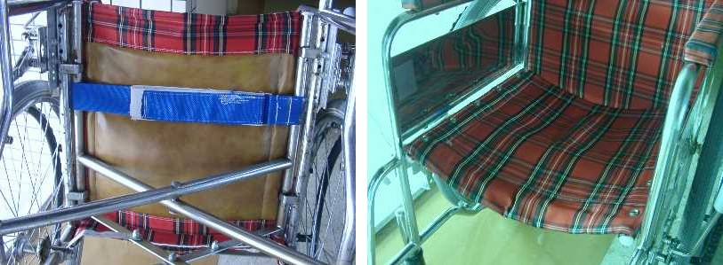

車いすのシートの改良
長い期間使い続けると，車いすのシートは徐々にたるんできます．特の座席部分は体重のかかる座席中央部分から前端部分にかけて特に大きくたるんできます．（上図の上のように前下がりの傾斜ができる） 前半部分がたるみますと座席全体が前に傾き，すべり座り（仙骨座りとかずっこけ座りとも言います）になりやすくなります．また座席から床へすべり落ちてしまう場合もあります．
そこで座面張り調整機構付きの車いすを参考にしてフレーム間にベルトをつけてみました．ベルトは金具とベルクロで長さが調整できるようにしました．
座面の前から３分の１あたりにベルトをつけると，ちょうどお尻がはまりこむ凹型形状ができます．これで身体が前に滑るのを少なくできます．またベルトの前方部分が前傾斜しますので，足駆動の動きも思いのほかじゃまになりません．

当院にはこのような古い車いすがたくさんあります．これまで２０台以上製作し問題なく使用しています．同様の問題でお困りの方はどうぞこれを参考におためしください．
2018/3/19 UTF-8 に変更
08/05/01 公開